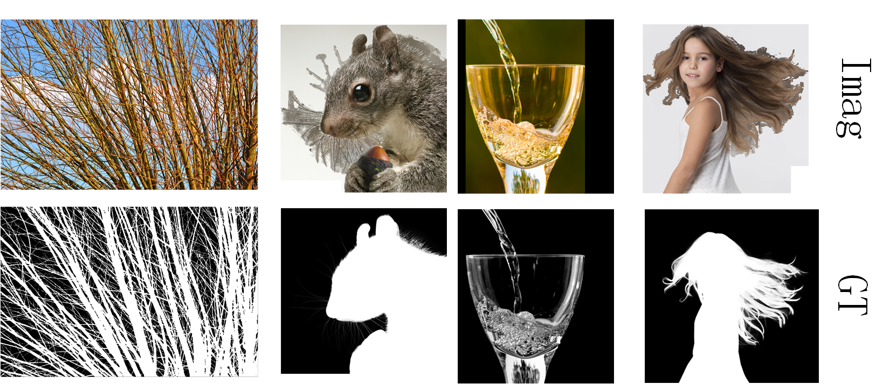

Abstract
Existing deep learning based matting algorithms primarily resort to high-level semantic features to improve the overall structure of alpha mattes. However, we argue that advanced semantics extracted from CNNs contribute unequally for alpha perception and we are supposed to reconcile advanced semantic information with low-level appearance cues to refine the foreground details. In this paper, we propose an end-to-end Hierarchical Attention Matting Network (HAttMatting), which can predict the better structure of alpha mattes from single RGB images without additional input. Specifically, we employ spatial and channel-wise attention to integrate appearance cues and pyramidal features in a novel fashion. This blended attention mechanism can perceive alpha mattes from refined boundaries and adaptive semantics. We also introduce a hybrid loss function fusing Structural SIMilarity (SSIM), Mean Square Error (MSE) and Adversarial loss to guide the network to further improve the overall foreground structure. Besides, we construct a large-scale image matting dataset comprised of $59,600$ training images and $1000$ test images (total $646$ distinct foreground alpha mattes), which can further improve the robustness of our hierarchical structure aggregation model. Extensive experiments demonstrate that the proposed HAttMatting can capture sophisticated foreground structure and achieve state-of-the-art performance with single RGB images as input.
Method

The core idea of our approach is to suppress redundant semantics in advanced features and eliminate futile BG details in spatial cues, then aggregate them to predict accurate alpha mattes. For this purpose, we adopt channel-wise attention to distill pyramidal features, and perform spatial attention on spatial cues to eliminate image texture details outside FG simultaneously.
Our Dataset
The above picture is some examples of our Distinctions-646 whcih is composed of 646 individual FG images. We divide these FG objects into 596 and 50, and then produce 59,600 training images and 1000 test images according to the composition rules in DIM. Meanwhile，we will release our composition acode which is accelerated by GPU and faster 3-5 times than the original code.
BibTex
@InProceedings{Qiao_2020_CVPR,
author = {Qiao, Yu and Liu, Yuhao and Yang, Xin and Zhou, Dongsheng and Xu, Mingliang and Zhang, Qiang and Wei, Xiaopeng},
title = {Attention-Guided Hierarchical Structure Aggregation for Image Matting},
booktitle = {The IEEE Conference on Computer Vision and Pattern Recognition (CVPR)},
month = {June},
year = {2020}
}